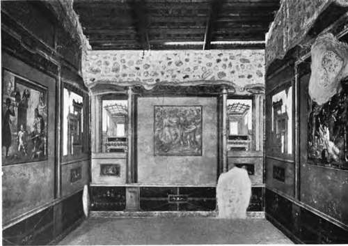

Historical Sketch
Description
This section is from the book "Mural Painting", by F. Hamilton Jackson. Also available from Amazon: Mural Painting: -1904.
Historical Sketch
If the paintings in the porch and the corridor of the Minoan palace at Cnossos, of which very interesting • drawings were exhibited at the Winter Exhibition of the Royal Academy of Arts in 1903. are executed in true fresco, as was stated by Dr. Evans in his paper read before the Eoyal Institute of British Architects, the process must be held to be of extreme antiquity, since the date assigned to them is the eighteenth century b.c.; but judging from the drawings one would say that they were some form of tempera or " secco " the mode in which the surface is shown to have peeled off in places and the elaborate patterns painted upon the ground-colour in contrasting colours being unlike the technique of true fresco. The discovery of large quantities of gypsum (sulphate of lime) in the process of excavation makes it almost certain that the medium used was a tempera medium, as true fresco is a process in which carbonate of lime is formed and encloses the colours applied to the wet wall, while sulphate of lime sets so quickly that even if it produced a similar enclosing crystallic film it would be impossible to execute any elaborate painting upon the surface between the laying of the plaster and its drying. The Egyptian wall-paintings are all executed in some form of tempera, as far as one can judge from the analysis made of fragments of coloured plasters, which always show some form of gum or glue, as are those which have been found in the Etruscan tombs.
Sig. Conestabile, in describing the interesting tombs near Orvieto discovered by Sig. Golini, speaks of the wall-paintings as "frescoes" and M. Des Vergers uses the same word in speaking of other Etruscan tombs at Cflere and Chiusi; but I think the word is only used loosely, since the latter describes one tomb in which armour and other objects are carved in stone and then coloured, in the same manner.
Pliny gives details which suggest that something called fresco was not unknown to the Greeks. He says that Muraena and Varro in their sedileship had a fine painting on the plaster of a wall at Lace-daemon cut away from the bricks and transported in wooden frames to Rome for the purpose of adorning the Comitium. The extract now given probably refers to tempera. " Ludius, who lived in the time of the late Emperor Augustus, was the first to introduce the fashion of covering the walls of our houses with most pleasing landscapes, representing villas, porticoes, ornamental gardening, woods, groves, hills, fishponds, canals, rivers, sea shores, and anything else one could desire: varied with figures of persons walking, sailing, or proceeding to their villas on asses or in carriages. Then, too, there are others to be seen fishing, fowling, or gathering in the vintage. In some of his decorations there are fine villas to be seen, and roads to them across the marshes, with women making bargains to be carried across on men's shoulders, who move along slipping at every step and tottering beneath their load; with numberless other subjects of a similar nature, redolent of mirth and of .the most amusing ingenuity. It was this artist, too, who first decorated our uncovered edifices with representations of maritime cities, a subject which produces a most pleasing effect, and at a very trifling expense.9' He also says that in a temple at Lanuvium, which was in ruins, were to be seen nude figures of Atalanta and of Helen, which were of the greatest beauty, painted on the wall and in perfect preservation. Also that the Emperor Caligula wished to remove them, but that the plaster would not allow of the operation being carried out successfully. At Pompeii lime is found in all the colours and in most of the walls only two horizontal joinings in the plaster are to be detected, though the figure subjects sometimes seem to have been inserted Probably, therefore, they used some traditional method of colouring plain surfaces in fresco handed down from antiquity. Otto Donner says that many of these wall-paintings are true fresco, and gives as one reason that in some places they had been subjected to a sufficient heat to change yellow ochre into red, which would have destroyed any tempera medium, but the colours still remained on the walls. He goes on to say that it would have given him great pleasure to find a real tempera picture, but that in his opinion all are true fresco—that analysis found no wax in any painted plaster except in the vermilion grounds, nor signs of animal nor vegetable colours except the rosy colour, which is probably " purpurissimum," added " a tempera." Tempera was only used for retouching and to assist the manipulation of certain colours, and the wax varnish to protect those which were likely to prove fugitive. Requeno says, however, that Winckel-mann and the academicians found that when the paintings were washed with water the subject came away, leaving the coloured ground beneath.
Pompeian wall-painting. House of the Vettii.
Among the Greek painters Agatharcus and Demo-critus studied and used perspective, at the time of Alcibiades, who commissioned the former to paint his house, and when he refused, pleading overwork, locked him up till he consented. Apollodorus, who was a little later, was the first real artist, according to Pliny, though Agatharcus had already introduced backgrounds of landscape, etc., and thus enabled figures to be combined in a pictorial composition. His celebrated contemporaries were Zeuxis and Parrhasius in Ionia, Eupompus in Sicyon, and Timanthes in Cynthos. Pamphilus of Amphipolis developed the principles of Eupompus and established the school of Sicyon; he was the master of Apelles, Melanthus, and Pausius. By his influence the art of drawing was made of primary importance in Greek education. His pupils went through a ten years' course, with corresponding fees, a talent each year. The course comprehended outline - drawing, painting in fresco, encaustic, etc., anatomy, arithmetic, and geometry. Pliny cites Yarro as saying that under the Roman kings the Etruscans decorated the temples before Greeks were employed there.
Continue to: